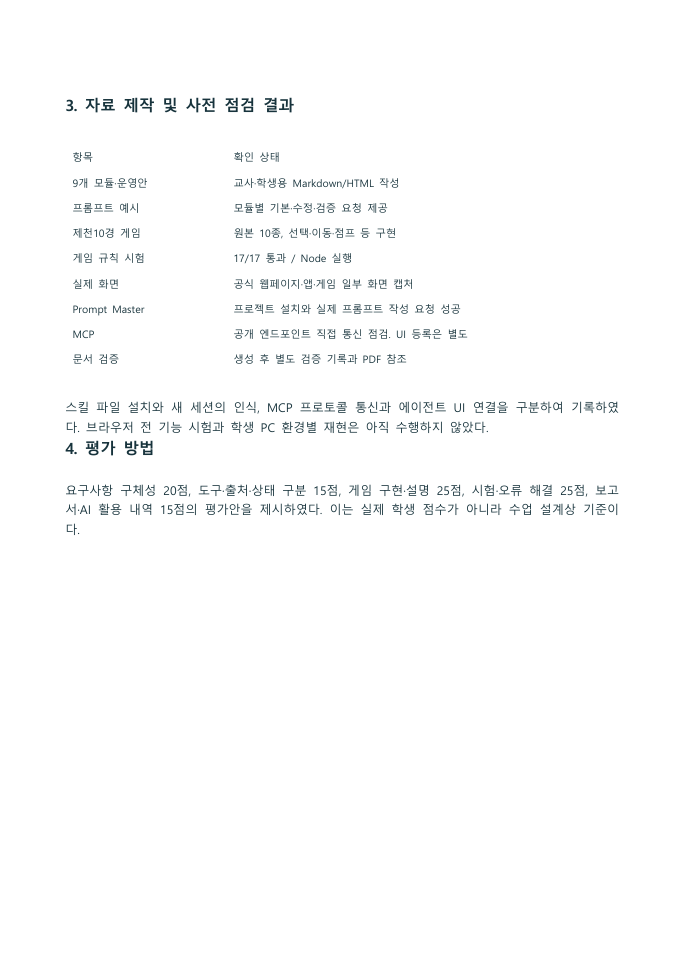
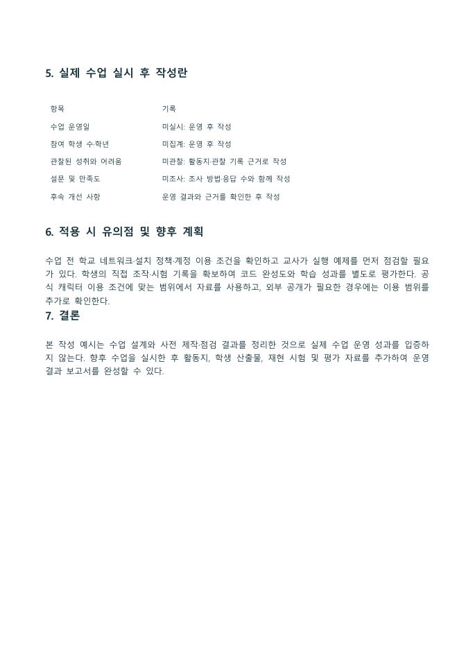
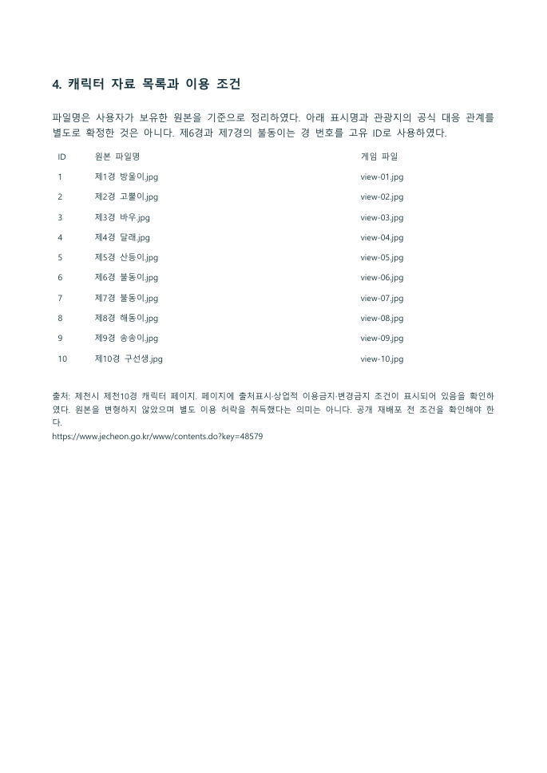
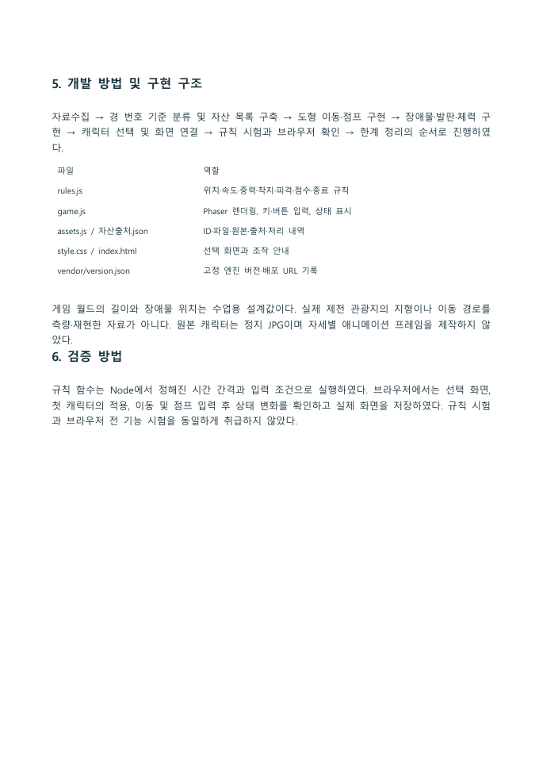
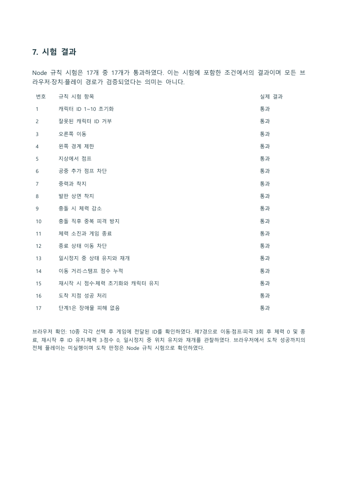
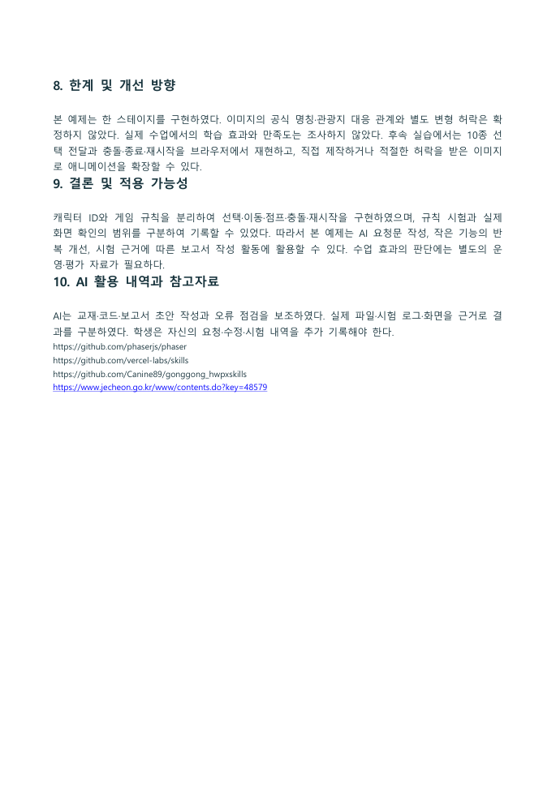
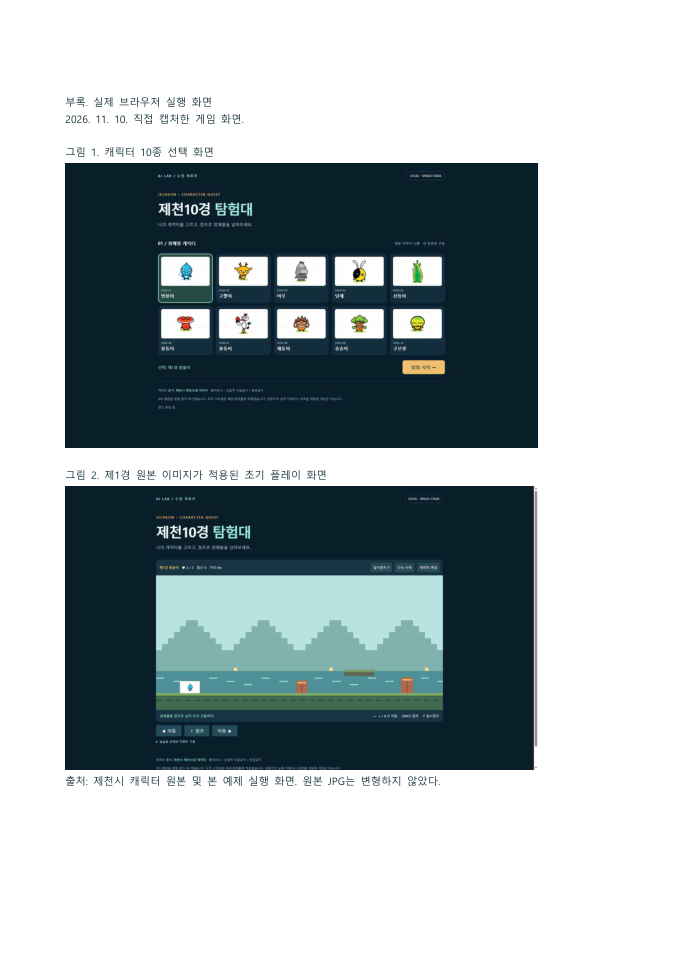

HWPX 보고서 예시와 열람 안내
사용자 지정 gonggong_hwpxskills의 assets/report-template.hwpx를 원본 양식으로 사용했다. 원본은 보존하고 새 문서에 문단과 표를 구성하였다. 학생용에는 실제 게임 화면 2개를 삽입했다.
문서 검증
세 파일은 ZIP/XML 구조 검사와 실제 한글 열림·PDF 저장을 확인했다. 학생용 6쪽·교사용 3쪽·첫 실습 1쪽이며 한글 PageCount와 PDF 페이지 수가 일치한다. 학생용과 교사용 문서는 작성 예시이며 실제 수업 효과를 측정한 보고서가 아니다.
실제 문서 렌더
아래 이미지는 실제 한글에서 PDF로 내보낸 결과다. 설명용으로 새로 그린 문서 화면이 아니다. 한글 앱 UI 전체 캡처와는 구분한다.
교사용_AI수업운영_보고서작성예시
 실제 한글 PDF 변환 결과: 09_보고서_교사용_AI수업운영_보고서작성예시_p01.png · 실제 캡처 2026-11-10
실제 한글 PDF 변환 결과: 09_보고서_교사용_AI수업운영_보고서작성예시_p01.png · 실제 캡처 2026-11-10
출처: ../06_HWPX보고서예시/교사용_AI수업운영_보고서작성예시.pdf · 클릭하면 원본 크기로 열림

실제 한글 PDF 변환 결과: 09_보고서_교사용_AI수업운영_보고서작성예시_p02.png · 실제 캡처 2026-11-10
출처: ../06_HWPX보고서예시/교사용_AI수업운영_보고서작성예시.pdf · 클릭하면 원본 크기로 열림

실제 한글 PDF 변환 결과: 09_보고서_교사용_AI수업운영_보고서작성예시_p03.png · 실제 캡처 2026-11-10
출처: ../06_HWPX보고서예시/교사용_AI수업운영_보고서작성예시.pdf · 클릭하면 원본 크기로 열림
첫실습_AI활용결과_한페이지
 실제 한글 PDF 변환 결과: 09_보고서_첫실습_AI활용결과_한페이지_p01.png · 실제 캡처 2026-11-10
실제 한글 PDF 변환 결과: 09_보고서_첫실습_AI활용결과_한페이지_p01.png · 실제 캡처 2026-11-10
출처: ../06_HWPX보고서예시/첫실습_AI활용결과_한페이지.pdf · 클릭하면 원본 크기로 열림
학생용_제천10경게임_개발보고서
 실제 한글 PDF 변환 결과: 09_보고서_학생용_제천10경게임_개발보고서_p01.png · 실제 캡처 2026-11-10
실제 한글 PDF 변환 결과: 09_보고서_학생용_제천10경게임_개발보고서_p01.png · 실제 캡처 2026-11-10
출처: ../06_HWPX보고서예시/학생용_제천10경게임_개발보고서.pdf · 클릭하면 원본 크기로 열림

실제 한글 PDF 변환 결과: 09_보고서_학생용_제천10경게임_개발보고서_p02.png · 실제 캡처 2026-11-10
출처: ../06_HWPX보고서예시/학생용_제천10경게임_개발보고서.pdf · 클릭하면 원본 크기로 열림

실제 한글 PDF 변환 결과: 09_보고서_학생용_제천10경게임_개발보고서_p03.png · 실제 캡처 2026-11-10
출처: ../06_HWPX보고서예시/학생용_제천10경게임_개발보고서.pdf · 클릭하면 원본 크기로 열림

실제 한글 PDF 변환 결과: 09_보고서_학생용_제천10경게임_개발보고서_p04.png · 실제 캡처 2026-11-10
출처: ../06_HWPX보고서예시/학생용_제천10경게임_개발보고서.pdf · 클릭하면 원본 크기로 열림

실제 한글 PDF 변환 결과: 09_보고서_학생용_제천10경게임_개발보고서_p05.png · 실제 캡처 2026-11-10
출처: ../06_HWPX보고서예시/학생용_제천10경게임_개발보고서.pdf · 클릭하면 원본 크기로 열림

실제 한글 PDF 변환 결과: 09_보고서_학생용_제천10경게임_개발보고서_p06.png · 실제 캡처 2026-11-10
출처: ../06_HWPX보고서예시/학생용_제천10경게임_개발보고서.pdf · 클릭하면 원본 크기로 열림
원문과 생성 과정
각 문서의 _원문.md, 생성내역.json, 09_제작도구/build_reports.py 및 verify_reports.py를 제공한다. 재생성하면 교재용 출력 파일이 갱신되므로 학생이 수정한 보고서는 별도 이름으로 보존한다. 원문 Markdown의 표는 파이프 구분 기록이며 편집용 표 구조는 HWPX에 포함되어 있다.